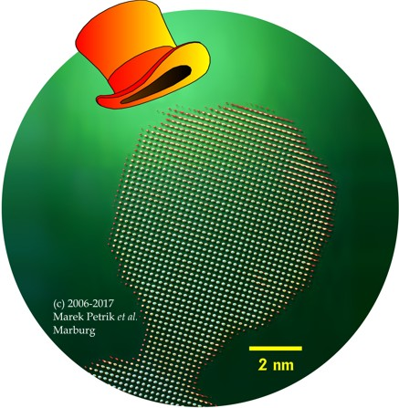

| Nanochemistry | Historiography | Sphere Packings | References | About |
| Solid State Nanochemistry, Chemical Historiography and the Theory of Sphere Packings This is an overview of the author's research carried out at the department of chemistry, Philipps University, Marburg, Germany. The document consists of three thematic sections and a section containing references. In the latter, a complete list of publications will be found along with some additional citations, both referred to in square brackets throughout the document. A section has also been included providing some general information about the document as well as its author. Choose a section from the menu above! Updated July 23, 2022. Empty the cache of your browser first in order to see the latest version! |  "A ferrimagnet in disguise." Klick on the image for details! |